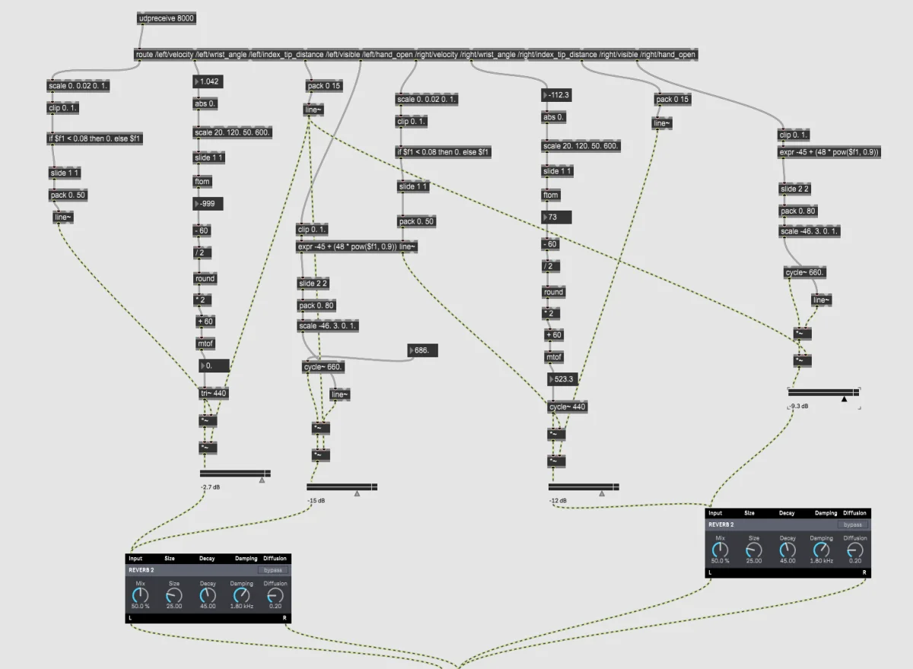

Analyse
Écouter, décrire et identifier les propriétés du matériau.
Électroacoustique · timbre · Max/MSP
Développer une pièce, une installation ou une performance à partir d’enregistrements, de synthèse, de transformations et de relations entre geste, espace et écoute.

01
Projets
Le travail peut accompagner une pièce électroacoustique, une musique mixte, une installation, une musique à l’image, une performance ou une recherche sonore. Le point de départ peut être un enregistrement, un son synthétique, une session DAW, un patch ou une intuition d’écoute.
Voix, objets, prises instrumentales, field recording ou archives personnelles.
Choisir un geste de transformation en fonction des propriétés du matériau, plutôt qu’empiler des effets.
Organiser les matières dans le temps et penser leur profondeur, leur mouvement et leur mode de diffusion.
02
Méthode
Écouter, décrire et identifier les propriétés du matériau.
Définir une durée, une densité, une tessiture, une règle ou une trajectoire.
Produire plusieurs variantes avec un algorithme, un système ou un outil d’IA.
Comparer les résultats et décider ce qui possède une valeur musicale.
Modifier, recomposer, orchestrer et intégrer le matériau dans une forme.
Max/MSP, enregistrements, DAW, synthèse, capteurs, Python et outils d’IA peuvent être mobilisés selon le projet. Le choix de l’outil vient après l’identification du problème musical.
03
Documents
Les éléments peuvent être envoyés avant la séance afin de réserver le temps en direct aux décisions et aux essais utiles.
04
Format
La séance se déroule en ligne, en français, avec vos sons, vos exports ou votre patch. Les outils sont expliqués au moment où ils permettent de résoudre une question de composition.